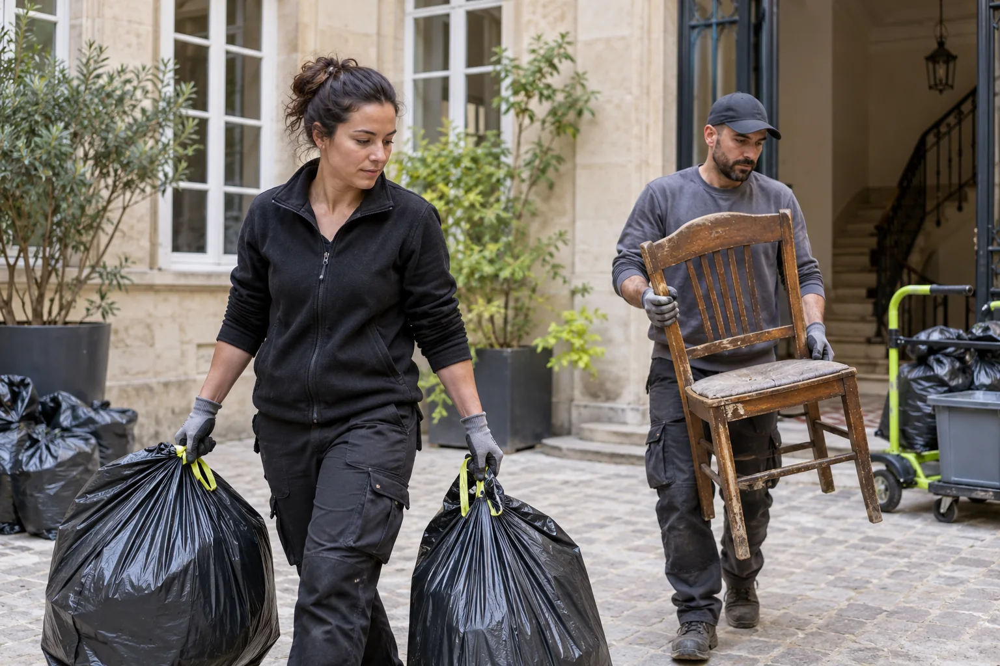
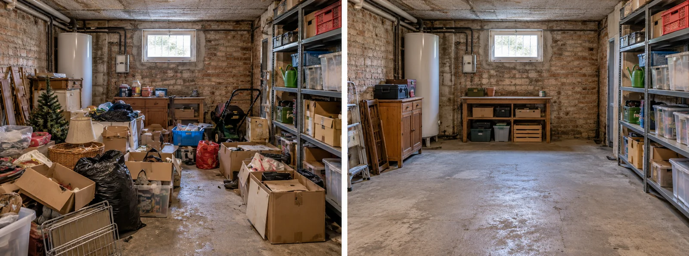

Maison Diogène : jardin, garage, cave, dépendances
Des volumes plus importants
Pièces à vivre, chambres, combles, sous-sol, garage : l’accumulation peut occuper plusieurs niveaux. Le chantier est plus long, et il faut parfois plusieurs camions.
La visite sert à estimer le volume réel, pièce par pièce, y compris les espaces fermés depuis des années.
Le garage et la cave
On y trouve souvent des meubles, du matériel, des produits dangereux (peintures, solvants, bidons). Ces produits ne vont pas à la poubelle : ils partent en déchetterie spécialisée ou en filière agréée.
Les caves humides peuvent abriter des moisissures et des nuisibles.

Le jardin et les extérieurs
Dépôts d’objets, déchets verts, matériaux, épaves de mobilier. Le nettoyage des extérieurs fait partie du devis s’il est demandé. Un jardin envahi peut aussi abriter des rongeurs.
Nous évacuons, trions et traitons si nécessaire.
Les installations à vérifier
Dans une maison, il faut aussi regarder l’électricité, la plomberie, la chaudière et la toiture. Une fuite ou une infiltration non réparée entretient l’humidité.
Ces réparations ne font pas partie du nettoyage, mais nous les signalons dans le compte rendu.

Avant une vente ou une succession
Après débarras et nettoyage, la maison est prête pour un diagnostic, une estimation ou une visite. Le bien reprend de la valeur. Nous remettons une facture détaillée et un compte rendu avec photos.
Pour une succession, nous aidons au tri avec les héritiers et le notaire.
Maison syndrome de Diogène à Paris 13e : nous contacter
Besoin d’une nettoyage Diogène dans le 13e arrondissement ? Notre équipe se déplace à Paris 13e pour un maison syndrome de Diogène, y compris le week-end, avec un prix écrit avant les travaux.